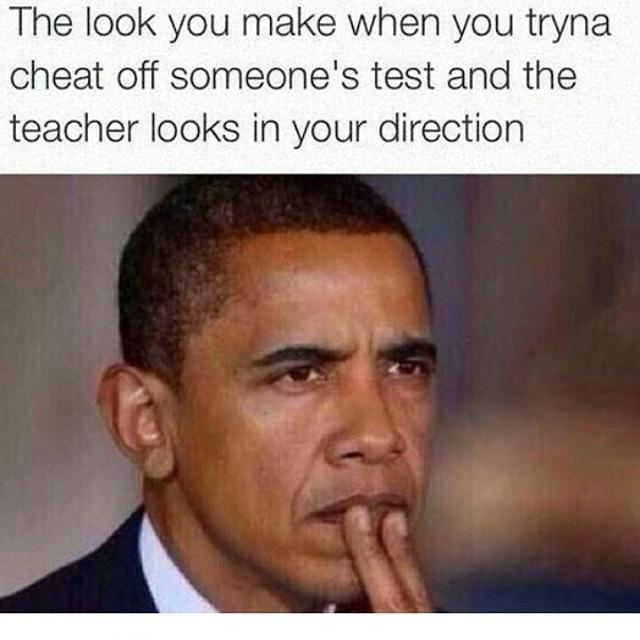
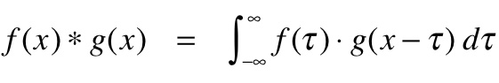

In December 2020, a story broke about my former university "investigating 'large scale' cheating". This came as no surprise, both because of COVID's forcing many classes online and because, well, college students cheat. The former reason is (hopefully) exclusive to 2020 and 2021, but the latter is as old as the university itself.
Here I examine why students cheat and what universities can do to stop it, both online and when classes inevitably return to being held in-person. These focus mostly on STEM-type courses, but can be applied with modifications to non-STEM courses.
Before doing so, cheating should be defined so there's no ambiguity. TAMU defines cheating as:
Intentionally using or attempting to use unauthorized materials, information, notes, study aids or other devices or materials in any academic exercise.
This definition is at least impractical, if not flawed. Assuming the professor authorizes such materials, am I to contact him every time I am about to open a reference website to help on my homework? (I have a feeling this definition is ambiguous to cover the university and give them the upper-hand.)
Cal Poly's definition is a bit better, although still general:
Cheating is defined as obtaining or attempting to obtain, or aiding another to obtain credit for work, or any improvement in evaluation of performance, by any dishonest or deceptive means.
The difference in the two is the inclusion of "dishonest" and "obtain credit for work, or any improvement in evaluation of performance". While dishonest is technically subjective, it is much closer to objective in the context of cheating. And cheating is dishonest. The cheater is claiming they:
No matter how many backflips one does during their mental gymnastics, cheating is wrong. There is no way to justify it.
College is a difficult time for some. They load up on courses to meet their scholarship requirements, work a part-time job to make ends meet and keep student loans at bay, are involved in organizations, and have other priorities. While coursework should be near the top of their priority list (after all, that's the reason they're going to school (there's the case to be made that they're going for signaling, but that's for another time)), sometimes it falls short. And when it falls short, some opt for the easy route of cheating.
After all, that health course exam you have to take doesn't really matter, and you have plenty of homework and projects in your four engineering courses, and you have work every night until 10:00pm this week, and you have to do research as part of your capstone project, and ...
Some of those obligations really are more important than that health exam. Engineering courses are your focus, you need money to live, you need to do research to graduate. You don't need to know that Alzheimer's disease is more prominent in white women than white men.
Solution: Continue prioritizing until cheating is not a consideration.
On the other hand, some college students are just lazy and don't want to do the work, choosing the most easy route possible. The types of people discussed in the priorities section could also be considered lazy, as they are not honestly committing to what they signed up for.
Solution: These types of people likely cannot be fixed.
A derivative of laziness, some students have a challenging time understanding the material, and prefer the easy route of cheating than spending countless hours studying. Coupled with priorities, one can justify the use of cheating as "this takes too long to learn and I just don't have the time".
Solution: Spend more time studying or accept the grade you will get. College is not for everyone, especially some of the more challenging majors.
Competition is rampant at every university. There are limited spots for internships, full-time jobs, fellowships, graduate programs, etc. Grades themselves can also be competitive. Some universities only allow X% of a course's population to get an A/B. For example, if the A percentage is 10%, even if the every student in a 100-student course has between a 99 and 100 (99.01, 99.02, ..., 100), only the students with (99.91, 99.92, ..., 100) will get As, despite the other students performing almost flawlessly.
With situations like these, students will take every advantage they can get, sometimes including cheating.
Solution: It is impractical to ask companies and universities to expand their ranks to accommodate for more students. Grades are easy to accommodate without sacrificing rigor or the university's reputation. Even in my courses where there was no set percentage of grades and the professor could set the curve arbitrarily, plenty of students got Bs and Cs, with a few Ds sprinkled in. Allowing everyone to get an A no matter how others do is the best solution.
While the following proposals likely won't cure cheating completely, they may help to mitigate it. They are designed to be used in conjuction with one another, not as standalone methods. They may also seem draconian, but are relatively easy to follow and not terribly inconvenient.
The best experience I had with anti-cheating measures was in my modern physics class. The professor, a no-nonsense Austrian man, was vehemently against cheating for the same reasons most people are. He recruited (or perhaps ordered, given his authority) three graduate students to patrol the auditorium during exam time. They walked up and down the aisles, getting full coverage of all students. (Room setup is discussed in the next section, which is crucial to this method working.)
This method is ideal. Every student is under the watch of at least one proctor at all times. The proctors need only commit 6 hr/semester (2 hr/exam * 3 exam/semester) to proctoring, which is not significant and an easy requirement to impose. Students have a rough idea of where proctors are, but cannot determine their exact location without seeming suspicious. Note that it's important the proctors be mobile, as proctors sitting at the front of the room leave lapses in supervision.
Proctoring should not be limited to in-person settings, especially since cheating is much more rampant in virtual settings.
One solution is ProctorU (there are others, such as Honorlock, but the concept is the same). The method is simple (taken from University of Illinois at Urbana-Champaign):
- Authenticate the test taker’s identity to ensure that the person being monitored is the correct student.
- Observe the test taker via a webcam. The student is connected to a real person who guides him/her through the process.
- Watch the test taker's screen in real time and can see everything the student is doing both at the location and on screen.
The concept is solid: make sure it's the right person and that they're taking the exam without any external assistance, whether on the monitor or in the physical room. In practice, the software required is a major privacy issue, which is beyond the scope of this piece. A common recommendation is to use a school computer whenever possible during virtual proctoring to avoid installing the spyw...proctor software on personal computers.
Room setup is simple:
A few more notes:
The main purpose of exams are to test the student's knowledge and understanding of the material. A good score indicates they know/understand the material well, while a poor score indicates they do not.
Projects can serve as an exam replacement or betterment for a few reasons:
Doping in athletics sickens me, but the fact that they are allowed to compete again X years later sickens me even more. Tyson Gay, a world-class American sprinter, was banned for just one year and forced to return medals after failing a drug test. This practically incentivizes athletes to dope: if they have a 30% chance of getting caught and an 75% chance of winning $100,000 throughout the year from races, they will get $75,000/yr 70% of the time and $0/yr 30% of the time (due to forfeiture of the prize money). (Both figures do not include sponsorships, which are generally revoked after testing positive for PEDs). If there was a strict policy in place that banned athletes for life if they tested positive for PEDs, they would become more accountable about what they put in their bodies—none of that "Gay insisted that Gibson told him that the product was 'all natural' and that NFL clients had used it and passed drug tests. The label on the jar reads: '100% All Natural.'"
With zero-tolerance policies, the user's livelihood is at stake. The athlete cannot win any more races or collect sponsorship money, the corporate employee has no regular income, and the student has no shiny degree to show off to employers, only an awkward story about what happened if they choose to tell it. Who in their right mind would risk expulsion for a few points on an assignment or exam?
The issue lies with false positives, or punishing students who did not actually cheat. As Blackstone's ratio states:
It is better that ten guilty persons escape than that one innocent suffer.
While some cases are clear cut and leave no question about what the student was doing, others aren't, needing further analysis. If there is any doubt in any of the committee members' minds about whether or not the student was cheating, expulsion is immediately out of the question. Direct plagiarism (literally word-for-word and MOSS value of 1.00, or 100%) is the most obvious case.
What about when a professor catches a student peeking at another's exam? Should expulsion come down to he said she said, like what tends to happen in police interactions? This is part of the reason for room setup and protocols. If an E1 student has the exact same multiple choice answer pattern (e.g., AADBCDABA) as an E2 in view of them with obviously incorrect answers (e.g., "What is the Schrödinger wave equation", "A = L * W"), the probability they have identical answers is (1/4)^X on an X-question test, but even less if the tests are different and designed such that E1Q1's answer is A and E2Q1's A is obviously incorrect. The threshold that it becomes suspect should be determined on a case-by-case basis.
Even if expulsion rarely occurs due to cheating's difficult-to-prove nature, having it as a threat will surely dissuade (some) students from cheating.
Students cheat because they don't have the access they want to the information they want. Allowing this on an individual basis and not in a group setting makes cheating almost impossible by definition (contacting others is still a possibility). This is where open-everything exams come in: notes, books, calculators, dictionaries, encyclopedias, atlases. Everything is fair game as long as it doesn't connect to the internet or other people. The playing field is essentially level, as everyone has access to identical information and can choose what they want to bring.
This requires a few exam conditions:
At TAMU, the honor code is held sacred by some and scoffed at by others:
An Aggie does not lie, cheat or steal or tolerate those who do.
While this is meant to deter academic dishonesty (among other immoral acts) through shamefulness and appealing to the student's sense of morality, it utterly fails, as shown by the article linked in the first paragraph.
This is not a viable solution.
A few papers on academic dishonesty and prevention techniques:
{kind=link}